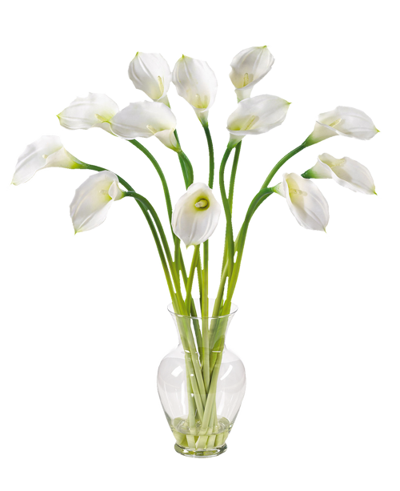

Kamieniarstwo
Nagrobki
Literniactwo
Schody z kamienia
Parapety z kamienia
Blaty z kamienia
Wyroby
Nagrobki, pomniki Kalisz
Nagrobki z kamienia naturalnego z Grabowa nad Prosną
Nasze pomniki produkowane są z naturalnych kamieni sprowadzanych do Grabowa nad Prosną koło Kalisza z całego świata, dzięki czemu możemy zaproponować Państwu wyjątkowy produkt finalny w postaci nagrobków o nietypowym wzornictwie i wyszukanej formie. Bogate doświadczenie w branży kamieniarskiej oraz odpowiednie zaplecze technologiczne pozwala nam, jako jednej z nielicznych firm w regionie, na podjęcie się niemal każdego zlecenia związanego z nagrobkami.
Nagrobki w Zakładzie Kamieniarskim Elżbiety Treski powstają wedle autorskich projektów, opracowanych przez pracujących dla nas specjalistów na indywidualne zamówienie Klientów z Grabowa oraz Kalisza i okolic. Jednocześnie jesteśmy otwarci na sugestię oraz pomysły naszych zleceniodawców i wykonujemy nagrobki w oparciu o propozycje, które nam zgłaszają.
Takie zindywidualizowane podejście do Klienta i elastyczność przy realizacji zamówień sprawiają, że nasze pomniki znacznie wyróżniają się spośród typowych wzorów, jakie można znaleźć okolicznych na cmentarzach. Ponadto ich staranne wykonanie przez wprawionych kamieniarzy gwarantuje, że będą one nie tylko estetyczne, ale też wyjątkowo trwałe.
Kamieniarstwo użytkowe w Grabowie koło Kalisza
Oprócz wyjątkowych nagrobków na miejscu w Grabowie koło Kalisza wykonujemy też cały szereg elementów kamieniarstwa użytkowego znajdujących zastosowanie w domu i budownictwie, między innymi:
Wykorzystywane w naszej pracy związanej z kamieniarstwem użytkowym doskonałej jakości kamienie odznaczają się bogatą kolorystyką i nadzwyczajną trwałością, co bez wątpienia ma znaczący wpływ na zadowolenie naszych Klientów z Grabowa, Kalisza i okolic. Pozwala im się cieszyć codziennym obcowaniem z naturalnym pięknem wydobytej z wnętrza ziemi skały przez lata.
Jesteśmy do Państwa dyspozycji codziennie, w godzinach od 8 do 18, służąc radą i pomocą na każdym etapie realizacji zamówienia na pomniki, parapety, schody, blaty, czy inne elementy z kamienia naturalnego, które przygotują nasi specjaliści z Zakładu Kamieniarskiego Elżbiety Treski, oddalonego zaledwie 34 km od Kalisza.

Dane Kontaktowe
Do skorzystania z usług kamieniarskich zapraszamy Klientów z mniej i bardziej odległych miejscowości województwa wielkopolskiego takich jak np.:
- Kalisz,
- Ostrów Wielkopolski,
- Grabów nad Prosną,
- oraz innych.